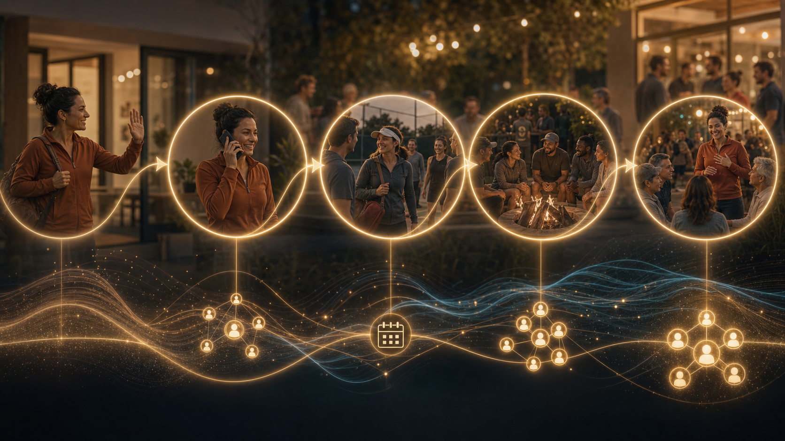

Make someone feel known.
The conversation creates trust. Tone, warmth, hesitation, disconnection, and readiness become visible.
Community intelligence from real conversations
A human conversation does what no dashboard can: it makes a person feel known while revealing what the community needs next.
Every real conversation creates connection for the person and intelligence for the community.
The new category
The conversation creates trust. Tone, warmth, hesitation, disconnection, and readiness become visible.
Who feels left out, who wants a better group, who should meet whom, and what invitation would work.
The system helps staff ask better questions, capture the signal, and create better real-world experiences.

The proof loop
It starts with a trusted conversation after an experience. What happens in that conversation creates the graph: time, place, people, comfort, trust, and the next invitation.
Community graph
One conversation reveals a person. Many conversations reveal the community: where connection happens, where it breaks, and what should happen next.
Why communities win
A strong community does more than fill spots. It helps people open up, come back, bring friends, and eventually lead experiences with heart.
Where it starts
After a real experience, a trusted conversation reveals what happened, who they connected with, and what would make them come back. Over time, those conversations improve every invitation, room, host, event, and follow-up.
Know who needs a better next touch before they quietly drift.
Learn tone, hesitation, schedule, energy, and belonging.
Improve invites, groups, events, hosts, referrals, and leaders.
Human-first governance
Staff, coaches, hosts, and leaders make the human judgment. AI helps them remember, prepare, and improve.
The durable layer is useful staff context, not a pile of raw private conversation.
The brand is not another chat interface. The product is better real-world connection.
Mission
As AI takes on the work people should not have to do, the point is more time in real communities, more human conversation, and more connection people can carry through the rest of the day. Human Conversation is building toward abundant connection: every person can return to a community and reliably leave more alive.
hello@humanconversation.com